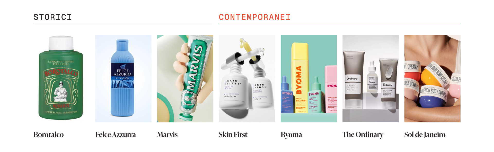
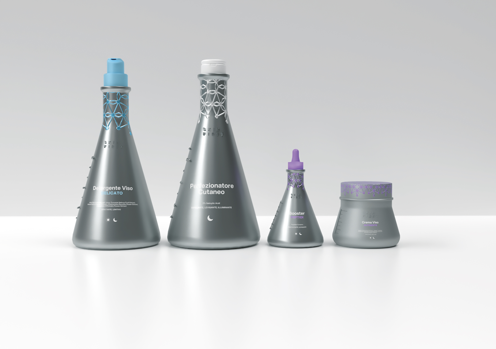

- Tesi di laurea
- Ricerca
- Editorial design
- Rebrand concept
Dal progetto alla traccia
Perché alcune identità visive durano decenni e altre spariscono come rumore di fondo?
Istituto Pantheon Design & Technology, 2026

Traccia o rumore
Il verde di Borotalco è lo stesso da più di un secolo: oggi è semplicemente il colore del talco. Molti brand di skincare recenti, invece, si somigliano. Tolto il nome, non resta niente da ricordare.
Il metodo
Ho costruito una griglia di analisi e l'ho applicata a sette brand: tre storici, Borotalco, Felce Azzurra e Marvis, e quattro recenti, The Ordinary, Byoma, Skin First e Sol de Janeiro. La prova più chiara è anche la più semplice: coprire il logo e vedere cosa resta.
-
Livello 1
Funzionale
Perché è nato?
-
Livello 2
Formale
Com'è fatto?
-
Livello 3
Culturale
Cosa porta con sé?
-
Livello 4
Resistenza
Regge senza il suo logo?

Tolto il logo,
cosa resta?
Gli stessi pack senza logo: gli storici si riconoscono ancora, i contemporanei quasi tutti no.

La Risposta
Non è la bellezza a far durare un’identità, e nemmeno la qualità del progetto. Un colore o una forma diventano traccia quando nascono da un bisogno reale, restano coerenti nel tempo e non somigliano a nessun altro.

L'applicazione
Skin First nasce per fare chiarezza sulla skincare, ma il suo pack sembra quello di un laboratorio qualsiasi. Il concept lo sposta da «sono scientifico» a «sono qui per orientarti», con tre segni propri: una forma che ricorda la beuta, la scala delle sei fasi della routine e un pattern che richiama la trama della pelle. Il nuovo pack si riconosce anche senza logo.


